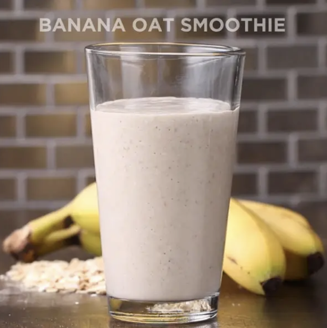

Banana oat smoothie

A healthy drink to tag along with breakfast to start the day
This 3 ingredient recipe can be done in under 5 minutes
Ingredients List
- 0.5 cup rolled oats
- One banana
- One cup milk
Recipe steps
- Add rolled oats to a blender and blend until the oats are the size of a fine crumb
- Add the banana and milk and blend well
- Pour in a glass